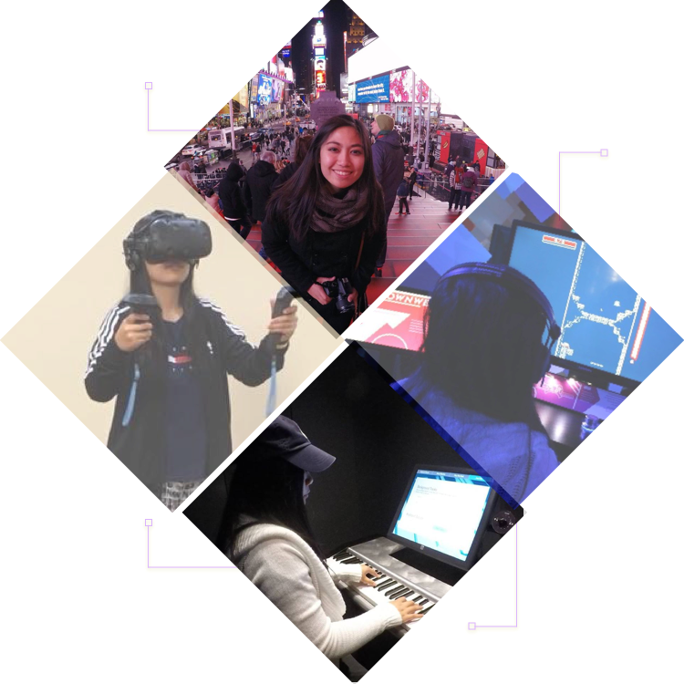

A joy for creating
I call myself a “Techreator” because I appreciate how both technology + creation foster expression and impact our everyday lives. I’m a multimedia creative who works with user-interface design and motion design. My hobbies include music and video production. I also have experience with programming art, influenced by my love and curiosity for video games.
